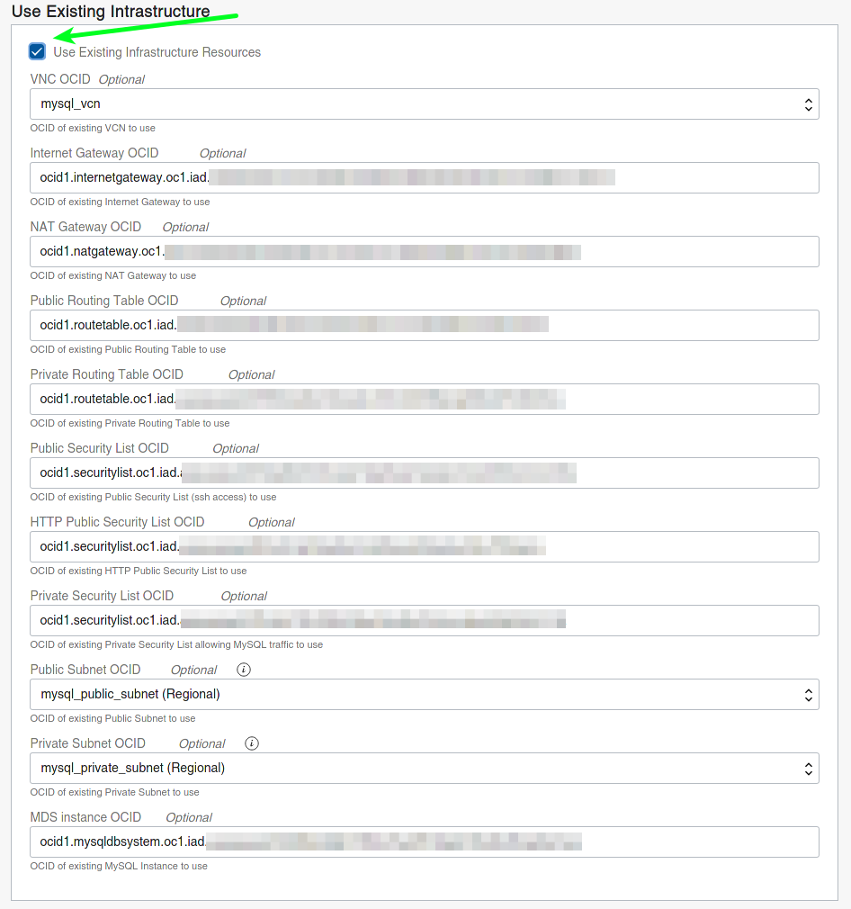
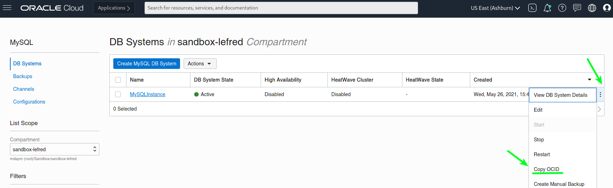
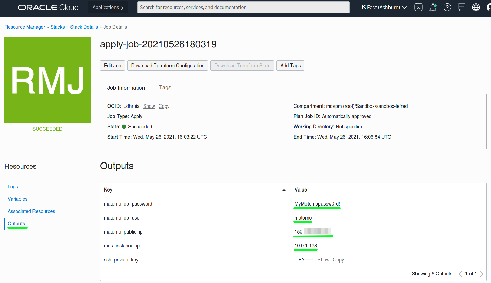
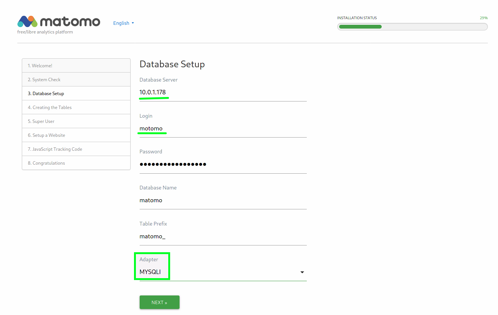
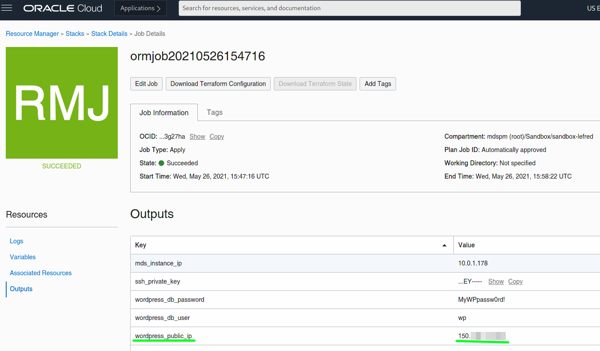
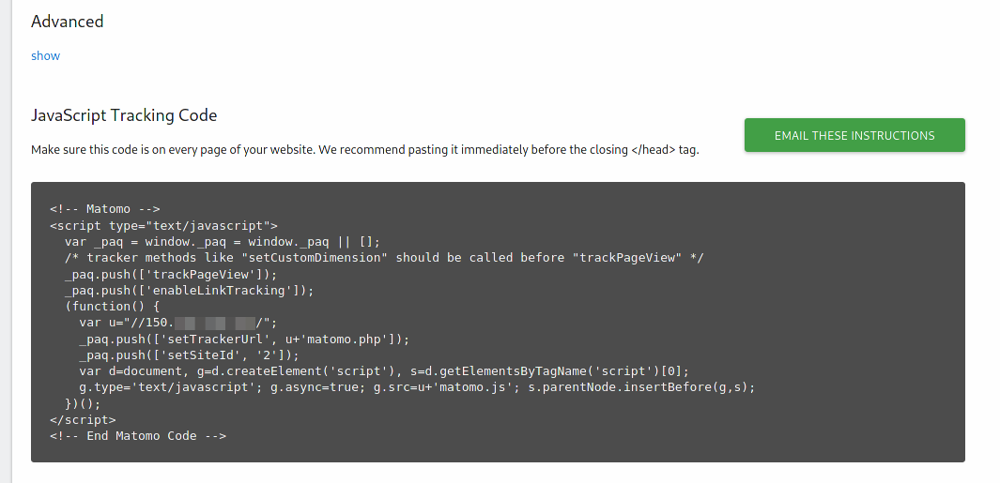
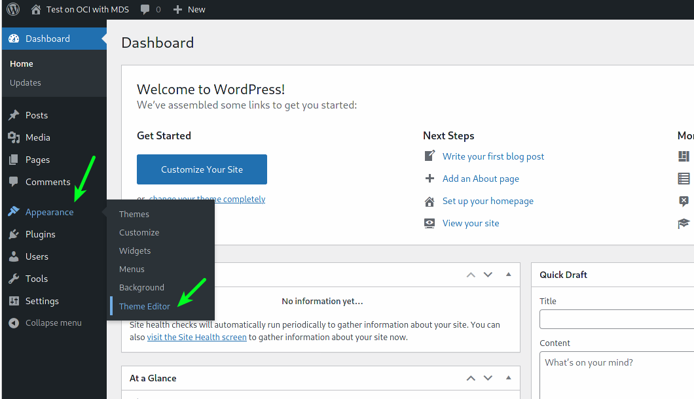
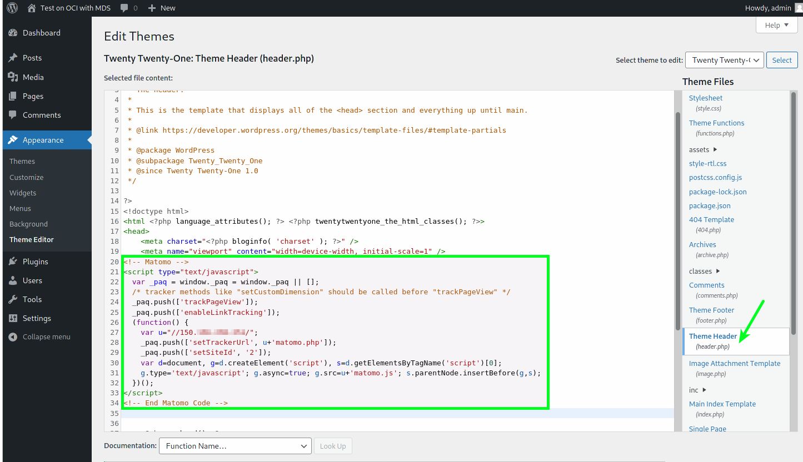
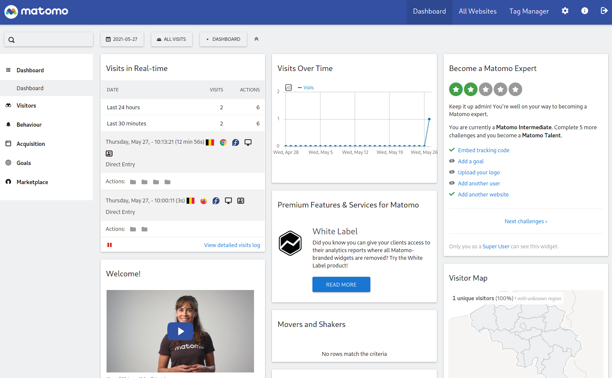

<div class="initial-content">
  <div id="main" role="main">

  <article class="page has-sidebar" itemscope itemtype="https://schema.org/CreativeWork">
    <meta itemprop="headline" content="Use Matomo Website Analytics on OCI with MDS">
    
    <meta itemprop="datePublished" content="2021-11-18T11:11:00+00:00">
    


    <header>
      <h1 id="page-title" class="page__title" itemprop="headline">Use Matomo Website Analytics on OCI with MDS
</h1>
      


    </header>

    <section class="page__content" itemprop="text">
      

        <p><a href="https://matomo.org/">Matomo</a> is a Google Analytics alternative for tracking metrics on your websites. If you follow my blog, you know how easy it is to deploy popular Open Source web solutions like WordPress, Joomla!, Drupal, Moodle, and Magento on Oracle Cloud Infrastructure (OCI).</p>

<p>All these solutions are using MySQL Database Service to store their data.</p>

<p>I’ve recently added a <a href="https://github.com/lefred/oci-matomo-mds">new stack</a> to  deploy Matomo. Of course, this can be a standalone installation to collect all your analytics from self-hosted websites, but today I’ll describe how to use it with an existing stack we’ve already deployed on OCI.</p>

<p>For this example, I deployed WordPress using the following stack: <a href="https://github.com/lefred/oci-wordpress-mds">oci-wordpress-mds</a>.</p>

<p>The first step is to <a href="https://www.oracle.com/cloud/sign-in.html?redirect_uri=https%3A%2F%2Fcloud.oracle.com%2Fresourcemanager%2Fstacks%2Fcreate%3FzipUrl%3Dhttps%3A%2F%2Fgithub.com%2Flefred%2Foci-matomo-mds%2Freleases%2Fdownload%2Fv1.0.0%2Fstack_matomo_mds.zip">deploy Matomo on OCI</a>.</p>

<p>In the second screen of the Stack’s wizard, we specify that we want to use an existing infrastructure. This way we won’t need to recreate our VCN, subnets, security lists, Internet Gateway, etc. — we want share what we’ve already deployed for WordPress:</p>

<figure class="">
              <picture>
                  <source srcset="assets/matamo-existing-infrastructure.webp 1x" />
                  
              </picture>
              <figcaption>OCI panel where you can toggle whether or not to use existing infrastructure</figcaption>
            </figure>

<p>As you can see for the majority of the input fields, we need to provide the OCID. These can be found on the OCI’s dashboard. For example the OCID for the MySQL Database can be found here:</p>

<figure class="">
              <picture>
                  <source srcset="assets/matamo-ocid-commandwebp.webp 1x" />
                  
              </picture>
              <figcaption>OCI dashboard with callouts highlighting the Copy OCID command</figcaption>
            </figure>

<p>We do this for every resources we want to reuse.</p>

<p>Then we create an apply job for the stack and when done we can get the public IP and other necessary information in the output section:</p>

<figure class="">
              <picture>
                  <source srcset="assets/matamo-output-info.webp 1x" />
                  
              </picture>
              <figcaption>The Outputs page in OCI, where you can find IP address, username, and other information</figcaption>
            </figure>

<p>We can then enter the public IP in a browser and finish the installation:</p>

<figure class="">
              <picture>
                  <source srcset="assets/matamo-progress-bar.webp 1x" />
                  
              </picture>
              <figcaption>Matamo dashboard with a halfway-finished progress bar</figcaption>
            </figure>

<p>It’s important to use the right connector/adapter: <strong>MYSQLI</strong>.</p>

<p>Then we follow the wizard and enter the required information.</p>

<p>When done, we can add our WordPress in Matomo to start tracking it. The first step is the retrieve its name (in our case, its public IP as I don’t use DNS):</p>

<figure class="">
              <picture>
                  <source srcset="assets/matamo-wordpress-public-ip.webp 1x" />
                  
              </picture>
              <figcaption>WordPress public IP is available to be copied from the OCI dashboard</figcaption>
            </figure>

<p>Once added in Matomo, we can retrieve the javascript code used to track our website:</p>

<figure class="">
              <picture>
                  <source srcset="assets/matamo-js-tracking-code.webp 1x" />
                  
              </picture>
              <figcaption>JS tracking code</figcaption>
            </figure>

<p>We copy that code and we go into the admin dashboard of our WordPress site to modify the theme and add the previous code in the header file:</p>

<figure class="">
              <picture>
                  <source srcset="assets/matamo-wp-editor.webp 1x" />
                  
              </picture>
              <figcaption>WordPress theme editor dashboard</figcaption>
            </figure>

<figure class="">
              <picture>
                  <source srcset="assets/matamo-wordpress-js-paste.webp 1x" />
                  
              </picture>
              <figcaption>JS code pasted into WordPress editor</figcaption>
            </figure>

<p>And this is all we needed to be able to get analytics of our website we deployed on OCI.</p>

<figure class="">
              <picture>
                  <source srcset="assets/matamo-dash-final-code.webp 1x" />
                  
              </picture>
              <figcaption>Matomo dashboard</figcaption>
            </figure>


          <div class="sidebar sticky">
    <!-- <p><strong>Tags:</strong> <span class="tags">

            
            <a class="animated-link tag" href="/topics/mysql">mysql</a>
            <a class="animated-link tag" href="/topics/analytics">analytics</a>
            <a class="animated-link tag" href="/topics/back-end">back-end</a>
            </span>
    </p> -->
  


<div itemscope itemtype="https://schema.org/Person">

  

  <div class="author__content">
    
      <a href="https:/lefred.be/"><h3 class="author__name" itemprop="name">Frédéric Descamps</h3></a>
    
    
      <div class="author__bio" itemprop="description">
        <p>@lefred has been consulting OpenSource and MySQL for 20+ years. After graduating in Management Information Technology, Frédéric started his career as a developer for an ERP under HPUX.</p>

      </div>
    
  </div>

  <div class="author__urls-wrapper">
    <ul class="author__urls social-icons">
      

      

      

      

      

      
        <li>
          <a href="https://twitter.com/lefred" itemprop="sameAs" rel="nofollow noopener noreferrer">
            <i class="fab fa-fw fa-twitter-square" aria-hidden="true"></i><span class="label">Twitter</span>
          </a>
        </li>
      

      

      
        <li>
          <a href="https://www.linkedin.com/in/freddescamps" itemprop="sameAs" rel="nofollow noopener noreferrer">
            <i class="fab fa-fw fa-linkedin" aria-hidden="true"></i><span class="label">LinkedIn</span>
          </a>
        </li>
      

      

      

      

      

      
        <li>
          <a href="https://github.com/lefred" itemprop="sameAs" rel="nofollow noopener noreferrer">
            <i class="fab fa-fw fa-github" aria-hidden="true"></i><span class="label">GitHub</span>
          </a>
        </li>
      

      

      

      

      

      

      

      

      

      

      

      

      

      

      
    </ul>
  </div>
</div>

  
  
  

  </div>


      </section>

      <footer class="page__meta">
        
        


        

  <p class="page__date"><strong><i class="fas fa-fw fa-calendar-alt" aria-hidden="true"></i> Updated:</strong> <time datetime="2021-11-18T11:11:00+00:00">November 18, 2021</time></p>


      </footer>
    </div>

  </article>
</div>

</div>

